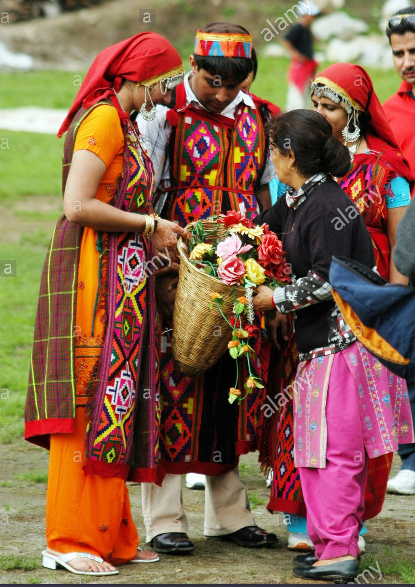
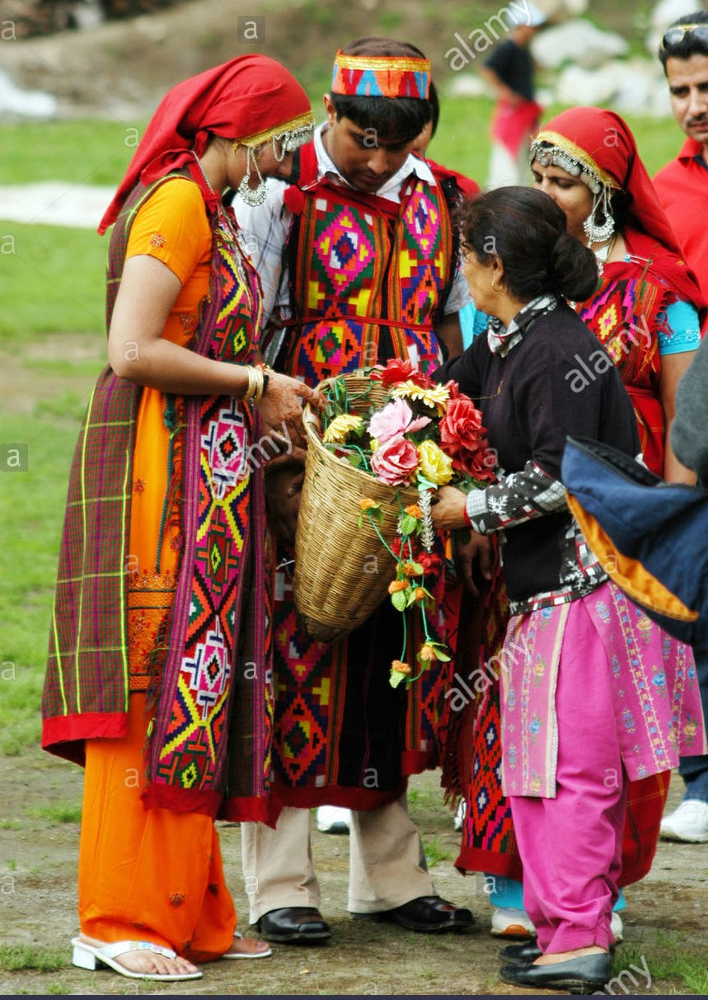

Manali Tribe
The different tribes in Manali reflect the socio- cultural dynamics and vibrancy of the place.
Comprising of exotic valleys and mountain ranges, Manali is the home to several indigenous tribes of Himachal Pradesh.
The diverse rituals and customs of the ethnic tribes of Manali make the place more colorful and attractive to outsiders.A prominent part of Himachal Pradesh, the main city of Manali comprises of a mixed population of mostly the educated elites. However, one can experience the local customs and rituals of the indigenous tribes in and around the city of Manali. Most of the local indigenous inhabitants of Manali belong the aboriginal tribal community of Kinnaur.
It takes a tribe to raise a human.
- Yuval Noah Harari, Sapiens: A Brief History of Humankind
Kinnaur tribe believes in equal distribution of labor among both the sexes. While almost all the men are engaged in sheep and cattle rearing, the women of the group do the household chores and bring up their children. The extremely beautiful women of Kinnaur are expected to integrate the proper values and customs of their culture into the personality of the young children. Religion occupies a very prominent place in the social and cultural life of the Kinnaur tribe.
While most of the indigenous population still follow the Totemic religion,they have recently started worshipping idols as an influence of the city culture.

 

Most of the local inhabitants converse in the Manali language. However due to constant contact with the outsiders, some members of the young group also speak Hindi and other Pahari languages. Gujjars are another prominent tribal group that inhabit in the vicinity of Manali. Most of the Gujjars are hunters and gatherers who move from one place to another in search of game and fodder for their cattle.